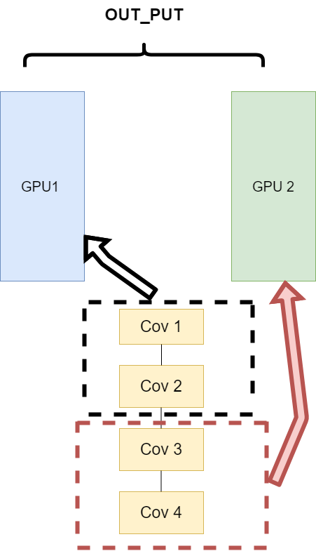
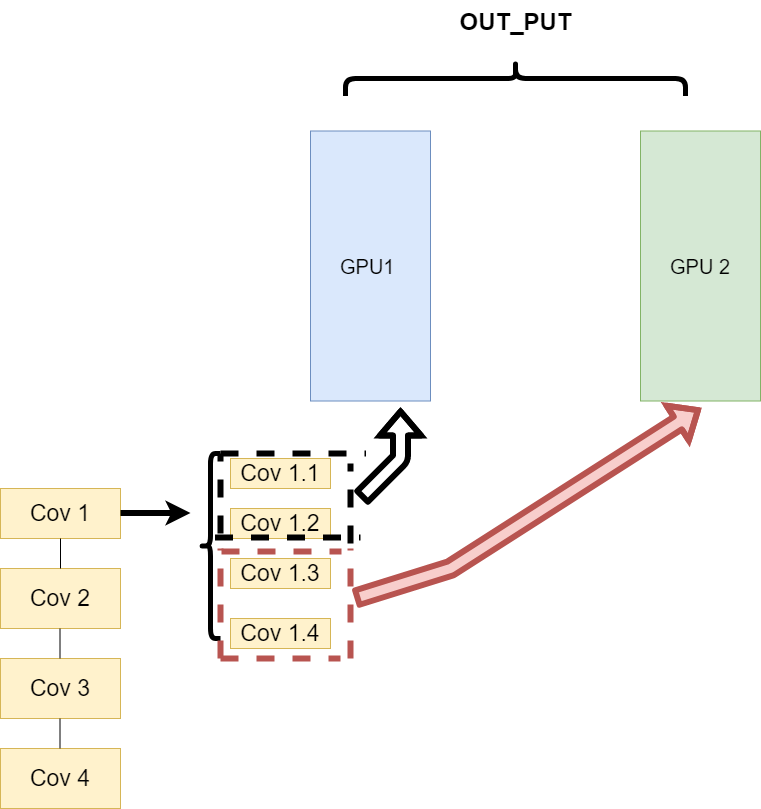
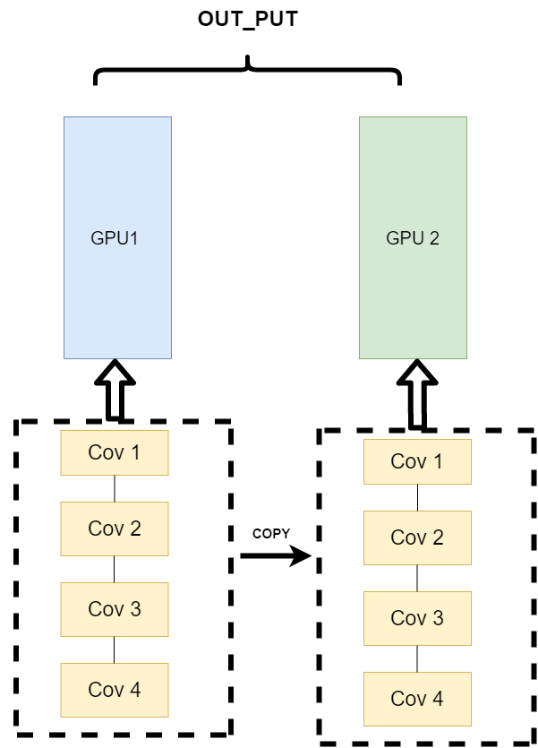
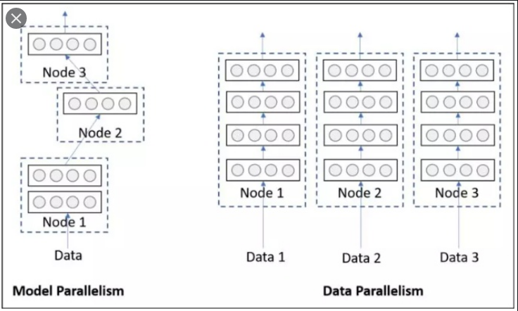
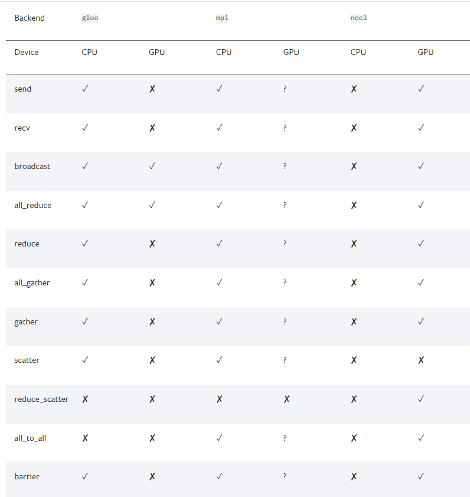

2.3 并行计算简介⚓︎
在利用PyTorch做深度学习的过程中，可能会遇到数据量较大无法在单块GPU上完成，或者需要提升计算速度的场景，这时就需要用到并行计算。完成本节内容时，请你确保至少安装了一个NVIDIA GPU并安装了相关的驱动。
经过本节的学习，你将收获：
- 并行计算的简介
- CUDA简介
- 并行计算的三种实现方式
- 使用CUDA加速训练
2.3.1 为什么要做并行计算⚓︎
深度学习的发展离不开算力的发展，GPU的出现让我们的模型可以训练的更快，更好。所以，如何充分利用GPU的性能来提高我们模型学习的效果，这一技能是我们必须要学习的。这一节，我们主要讲的就是PyTorch的并行计算。PyTorch可以在编写完模型之后，让多个GPU来参与训练，减少训练时间。你可以在命令行使用nvidia-smi命令来查看你的GPU信息和使用情况。
2.3.2 为什么需要CUDA⚓︎
CUDA是NVIDIA提供的一种GPU并行计算框架。对于GPU本身的编程，使用的是CUDA语言来实现的。但是，在我们使用PyTorch编写深度学习代码时，使用的CUDA又是另一个意思。在PyTorch使用 CUDA表示要开始要求我们的模型或者数据开始使用GPU了。
在编写程序中，当我们使用了 .cuda() 时，其功能是让我们的模型或者数据从CPU迁移到GPU上（默认是0号GPU）当中，通过GPU开始计算。
注：
1. 我们使用GPU时使用的是.cuda()而不是使用.gpu()。这是因为当前GPU的编程接口采用CUDA，但是市面上的GPU并不是都支持CUDA，只有部分NVIDIA的GPU才支持，AMD的GPU编程接口采用的是OpenCL，在现阶段PyTorch并不支持。
2. 数据在GPU和CPU之间进行传递时会比较耗时，我们应当尽量避免数据的切换。
3. GPU运算很快，但是在使用简单的操作时，我们应该尽量使用CPU去完成。
4. 当我们的服务器上有多个GPU，我们应该指明我们使用的GPU是哪一块，如果我们不设置的话，tensor.cuda()方法会默认将tensor保存到第一块GPU上，等价于tensor.cuda(0)，这将有可能导致爆出out of memory的错误。我们可以通过以下两种方式继续设置。
1. python
#设置在文件最开始部分
import os
os.environ["CUDA_VISIBLE_DEVICE"] = "2" # 设置默认的显卡
2. bash
CUDA_VISBLE_DEVICE=0,1 python train.py # 使用0，1两块GPU
2.3.3 常见的并行的方法：⚓︎
网络结构分布到不同的设备中(Network partitioning)⚓︎
在刚开始做模型并行的时候，这个方案使用的比较多。其中主要的思路是，将一个模型的各个部分拆分，然后将不同的部分放入到GPU来做不同任务的计算。其架构如下：

这里遇到的问题就是，不同模型组件在不同的GPU上时，GPU之间的传输就很重要，对于GPU之间的通信是一个考验。但是GPU的通信在这种密集任务中很难办到，所以这个方式慢慢淡出了视野。
同一层的任务分布到不同数据中(Layer-wise partitioning)⚓︎
第二种方式就是，同一层的模型做一个拆分，让不同的GPU去训练同一层模型的部分任务。其架构如下：

这样可以保证在不同组件之间传输的问题，但是在我们需要大量的训练，同步任务加重的情况下，会出现和第一种方式一样的问题。
不同的数据分布到不同的设备中，执行相同的任务(Data parallelism)⚓︎
第三种方式有点不一样，它的逻辑是，我不再拆分模型，我训练的时候模型都是一整个模型。但是我将输入的数据拆分。所谓的拆分数据就是，同一个模型在不同GPU中训练一部分数据，然后再分别计算一部分数据之后，只需要将输出的数据做一个汇总，然后再反传。其架构如下：

这种方式可以解决之前模式遇到的通讯问题。现在的主流方式是数据并行的方式(Data parallelism)
2.3.4 使用CUDA加速训练⚓︎
单卡训练⚓︎
在PyTorch框架下，CUDA的使用变得非常简单，我们只需要显式的将数据和模型通过.cuda()方法转移到GPU上就可加速我们的训练。如下：
model = Net()
model.cuda() # 模型显示转移到CUDA上
for image,label in dataloader:
# 图像和标签显示转移到CUDA上
image = image.cuda()
label = label.cuda()
多卡训练⚓︎
PyTorch提供了两种多卡训练的方式，分别为DataParallel和DistributedDataParallel（以下我们分别简称为DP和DDP）。这两种方法中官方更推荐我们使用DDP，因为它的性能更好。但是DDP的使用比较复杂，而DP经需要改变几行代码既可以实现，所以我们这里先介绍DP，再介绍DDP。
单机多卡DP⚓︎

首先我们来看单机多卡DP，通常使用一种叫做数据并行 (Data parallelism) 的策略，即将计算任务划分成多个子任务并在多个GPU卡上同时执行这些子任务。主要使用到了nn.DataParallel函数，它的使用非常简单，一般我们只需要加几行代码即可实现
model = Net()
model.cuda() # 模型显示转移到CUDA上
if torch.cuda.device_count() > 1: # 含有多张GPU的卡
model = nn.DataParallel(model) # 单机多卡DP训练
除此之外，我们也可以指定GPU进行并行训练，一般有两种方式
nn.DataParallel函数传入device_ids参数，可以指定了使用的GPU编号
model = nn.DataParallel(model, device_ids=[0,1]) # 使用第0和第1张卡进行并行训练
- 要手动指定对程序可见的GPU设备
os.environ["CUDA_VISIBLE_DEVICES"] = "1,2"
多机多卡DDP⚓︎

不过通过DP进行分布式多卡训练的方式容易造成负载不均衡，有可能第一块GPU显存占用更多，因为输出默认都会被gather到第一块GPU上。为此Pytorch也提供了torch.nn.parallel.DistributedDataParallel（DDP）方法来解决这个问题。
针对每个GPU，启动一个进程，然后这些进程在最开始的时候会保持一致（模型的初始化参数也一致，每个进程拥有自己的优化器），同时在更新模型的时候，梯度传播也是完全一致的，这样就可以保证任何一个GPU上面的模型参数就是完全一致的，所以这样就不会出现DataParallel那样显存不均衡的问题。不过相对应的，会比较麻烦，接下来介绍一下多机多卡DDP的使用方法。
开始之前需要先熟悉几个概念，这些还是有必要提一下的
进程组的相关概念
- GROUP：进程组，默认情况下，只有一个组，一个 job 即为一个组，也即一个 world。（当需要进行更加精细的通信时，可以通过 new_group 接口，使用 world 的子集，创建新组，用于集体通信等。）
- WORLD_SIZE：表示全局进程个数。如果是多机多卡就表示机器数量，如果是单机多卡就表示 GPU 数量。
- RANK：表示进程序号，用于进程间通讯，表征进程优先级。rank = 0 的主机为 master 节点。 如果是多机多卡就表示对应第几台机器，如果是单机多卡，由于一个进程内就只有一个 GPU，所以 rank 也就表示第几块 GPU。
- LOCAL_RANK：表示进程内，GPU 编号，非显式参数，由 torch.distributed.launch 内部指定。例如，多机多卡中 rank = 3，local_rank = 0 表示第 3 个进程内的第 1 块 GPU。
DDP的基本用法 (代码编写流程)
- 在使用
distributed包的任何其他函数之前，需要使用init_process_group初始化进程组，同时初始化distributed包。 - 使用
torch.nn.parallel.DistributedDataParallel创建 分布式模型DDP(model, device_ids=device_ids) - 使用
torch.utils.data.distributed.DistributedSampler创建 DataLoader - 使用启动工具
torch.distributed.launch在每个主机上执行一次脚本，开始训练
首先是对代码进行修改，添加参数 --local_rank
import argparse
parser = argparse.ArgumentParser()
parser.add_argument("--local_rank", type=int) # 这个参数很重要
args = parser.parse_args()
这里的local_rank参数，可以理解为torch.distributed.launch在给一个GPU创建进程的时候，给这个进程提供的GPU号，这个是程序自动给的，不需要手动在命令行中指定这个参数。
local_rank = int(os.environ["LOCAL_RANK"]) #也可以自动获取
CUDA_VISIBLE_DEVICES参数设定的0号GPU上面启动
torch.cuda.set_device(args.local_rank) # 调整计算的位置
接下来我们得初始化backend，也就是俗称的后端，pytorch介绍了以下后端：

可以看到，提供了gloo，nccl，mpi，那么如何进行选择呢，官网中也给了以下建议
- 经验之谈
- 如果是使用
cpu的分布式计算, 建议使用gloo，因为表中可以看到gloo对cpu的支持是最好的 -
如果使用
gpu进行分布式计算, 建议使用nccl。 -
GPU主机
- InfiniBand连接，建议使用
nccl，因为它是目前唯一支持 InfiniBand 和 GPUDirect 的后端。 - Ethernet连接，建议使用
nccl，因为它的分布式GPU训练性能目前是最好的，特别是对于多进程单节点或多节点分布式训练。 如果在使用nccl时遇到任何问题，可以使用gloo作为后备选项。 （不过注意，对于 GPU，gloo目前的运行速度比nccl慢。） - CPU主机
- InfiniBand连接，如果启用了IP over IB，那就使用
gloo，否则使用mpi - Ethernet连接，建议使用
gloo，除非有不得已的理由使用mpi。
当后端选择好了之后, 我们需要设置一下网络接口, 因为多个主机之间肯定是使用网络进行交换, 那肯定就涉及到IP之类的, 对于nccl和gloo一般会自己寻找网络接口，不过有时候如果网卡比较多的时候，就需要自己设置，可以利用以下代码
import os
# 以下二选一, 第一个是使用gloo后端需要设置的, 第二个是使用nccl需要设置的
os.environ['GLOO_SOCKET_IFNAME'] = 'eth0'
os.environ['NCCL_SOCKET_IFNAME'] = 'eth0'
可以通过以下操作知道自己的网络接口，输入
ifconfig, 然后找到自己IP地址的就是, 一般就是em0,eth0,esp2s0之类的,
从以上介绍我们可以看出， 当使用GPU的时候, nccl的效率是高于gloo的，我们一般还是会选择nccl后端，设置GPU之间通信使用的后端和端口：
# ps 检查nccl是否可用
# torch.distributed.is_nccl_available ()
torch.distributed.init_process_group(backend='nccl') # 选择nccl后端，初始化进程组
之后，使用 DistributedSampler 对数据集进行划分。它能帮助我们将每个 batch 划分成几个 partition，在当前进程中只需要获取和 rank 对应的那个 partition 进行训练：
# 创建Dataloader
train_sampler = torch.utils.data.distributed.DistributedSampler(train_dataset)
train_loader = torch.utils.data.DataLoader(train_dataset, batch_size=16, sampler=train_sampler)
注意： testset不用sampler
然后使用torch.nn.parallel.DistributedDataParallel包装模型：
# DDP进行训练
model = torch.nn.parallel.DistributedDataParallel(model, device_ids=[args.local_rank])
如何启动DDP
那么如何启动DDP，这不同于DP的方式，需要使用torch.distributed.launch启动器，对于单机多卡的情况：
CUDA_VISIBLE_DEVICES=0,1,2,3 python -m torch.distributed.launch --nproc_per_node=4 main.py
# nproc_per_node: 这个参数是指你使用这台服务器上面的几张显卡
有时候虽然说，可以简单使用DP，但是DDP的效率是比DP高的，所以很多时候单机多卡的情况，我们还是会去使用DDP
DP 与 DDP 的优缺点⚓︎
DP 的优势⚓︎
nn.DataParallel没有改变模型的输入输出，因此其他部分的代码不需要做任何更改，非常方便，一行代码即可搞定。
DP 的缺点⚓︎
DP进行分布式多卡训练的方式容易造成负载不均衡，第一块GPU显存占用更多，因为输出默认都会被gather到第一块GPU上，也就是后续的loss计算只会在cuda:0上进行，没法并行。
除此之外DP只能在单机上使用，且DP是单进程多线程的实现方式，比DDP多进程多线程的方式会效率低一些。
DDP的优势⚓︎
1. 每个进程对应一个独立的训练过程，且只对梯度等少量数据进行信息交换。
DDP 在每次迭代中，每个进程具有自己的 optimizer ，并独立完成所有的优化步骤，进程内与一般的训练无异。
在各进程梯度计算完成之后，各进程需要将梯度进行汇总平均，然后再由 rank=0 的进程，将其 broadcast 到所有进程。之后，各进程用该梯度来独立的更新参数。而 DP是梯度汇总到主 GPU，反向传播更新参数，再广播参数给其他的 GPU。
DDP 中由于各进程中的模型，初始参数一致 (初始时刻进行一次 broadcast)，而每次用于更新参数的梯度也一致，因此，各进程的模型参数始终保持一致。
而在DP 中，全程维护一个 optimizer，对各 GPU 上梯度进行求和，而在主 GPU 进行参数更新，之后再将模型参数 broadcast 到其他 GPU。
相较于DP，DDP传输的数据量更少，因此速度更快，效率更高。
2. 每个进程包含独立的解释器和 GIL。
一般使用的 Python 解释器 CPython：是用 C 语言实现 Pyhon，是目前应用最广泛的解释器。全局锁使 Python 在多线程效能上表现不佳，全局解释器锁（Global Interpreter Lock）是 Python 用于同步线程的工具，使得任何时刻仅有一个线程在执行。
由于每个进程拥有独立的解释器和 GIL，消除了来自单个 Python 进程中的多个执行线程，模型副本或 GPU 的额外解释器开销和 GIL-thrashing ，因此可以减少解释器和 GIL 使用冲突。这对于严重依赖 Python runtime 的 models 而言，比如说包含 RNN 层或大量小组件的 models 而言，这尤为重要。
DDP 的缺点⚓︎
暂时来说，DDP是采用多进程多线程的方式，并且训练速度较高，他的缺点主要就是，需要修改比较多的代码，比DP的一行代码较为繁琐许多。
参考资料：⚓︎
- Pytorch 并行训练（DP， DDP）的原理和应用
- Pytorch中单机多卡分布式训练
- Training Neural Nets on Larger Batches: Practical Tips for 1-GPU, Multi-GPU & Distributed setups
- DISTRIBUTEDDATAPARALLEL
- Pytorch 分布式训练（DP/DDP）
- DISTRIBUTED COMMUNICATION PACKAGE - TORCH.DISTRIBUTED
- pytorch多gpu并行训练
创建日期: November 30, 2023